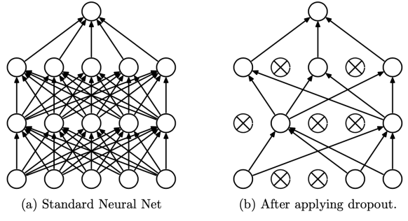
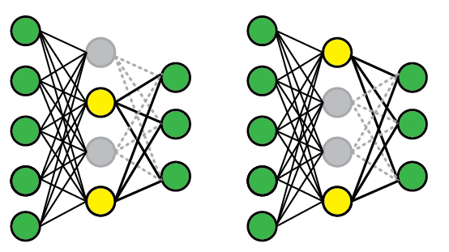
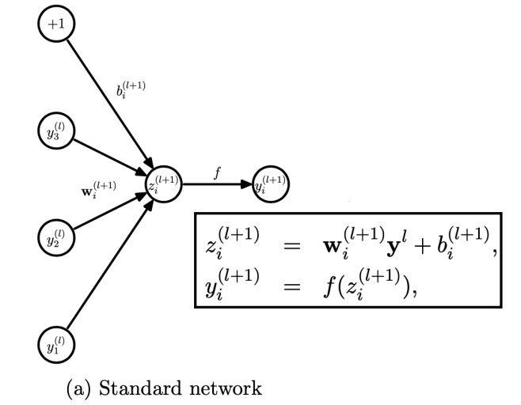
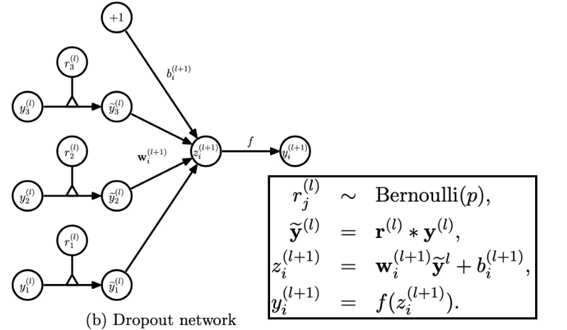

Table of Contents
- Why should we use Dropout?
- What Is a Dropout?
- Why does Dropout works?
- Tips for Using Dropout.
- References
Why should we use Dropout?
Before jumping into what is dropout, let’s try to answer the question of why should we use Dropout. Deep Neural Networks which are trained on smaller datasets can overfit the training data. Now, what is Overfitting? Overfitting happens when your model is too powerful to memorize the training data. But who cares about your training data, we want to take the model and put it into production for the use case. We want the model to perform well on the test/unseen dataset. Usually, Convolutional Neural Networks are less prone to Overfitting because of the idea of weight sharing i.e., you use the same filter/kernel and slide over the image, and therefore, you end up having fewer parameters in CNNs. The problem primarily occurs when you have a Deep Fully Connected Neural Network that tends to have a lot of parameters & they are likely to overfit. So, in short, Dropout is a regularization technique that prevents your Deep Neural Networks to overfit.
Does that mean you cannot apply to Convolutional Neural Networks? The answer is No, You can apply to CNNs and even to LSTMs and GRUs.
What Is Dropout?
Let’s try to Understand the dropout in the context of Fully Connected Neural Networks since they are more prone to Overfit. Look at the below image: 
In a Nutshell, Dropout is about killing/turning off the nodes in a network at a layer. Suppose you have an MLP like in figure(a), then during the training stage at layer l, you are essentially ignoring the neurons and that is done randomly with a certain probability, p. This probability, p, is the dropout rate that is a HyperParameter that you set before training the Network. Say you choose the dropout rate p=0.5 then it means you will delete each node with a 50% probability during each forward pass of your minibatch. In each forward pass of your minibatch, you will randomly drop the nodes and these nodes will be not going to update during backpropagation. 
In the above Image, Consider in the first forward pass in the Middle layer dropout may disable the 2nd & 4th nodes but in the second forward pass maybe 1st & 4th nodes will get disabled. In each iteration, during backpropagation, the weights corresponding to these nodes will not be updated.
How do we drop nodes practically? Let’s compare the standard network and a dropout network. 
We can observe the inputs of layer l, y^l, are multiplied with the weights, wi^(l+1) and bias bi^(l+1) is added to get net inputs for one neuron, and later a non-linearity (activation function) is applied on it to generate the value of the neuron in layer (l+1).
 - But in Dropout Network, first, a boolean vector r^(l) is generated which will contain the same number of elements as the number of neurons in layer l, then this vector is multiplied by the input vectors of layer l to get the net input. The net input is finally passed into an activation function. But the question is how do you arrive at this boolean vector? Let’s take an example to illustrate this point, in the above image we have 3 neurons in layer l, suppose you set the dropout rate to p=0.5 then one way to create the boolean vector is first to generate the random number vector containing numbers between 0 & 1. How can you do that? You can sample 3 numbers from a Uniform distribution with an interval [0,1]. Assume that you get a vector of random numbers as [0.1, 0.6, 0.8], then you will set the value of the vector to be zero when the random value < dropout rate(0.5 in our case) else you set 1. So, our random vector becomes [0,1,1] which represents that neuron1 is dropped and the rest of the neurons and not. Now, This vector we are calling r^(l) & the rest of the things are the same as usual.
So far we talked about the Training stage, But how does dropout work in the Inference stage? Since dropout is dropping neurons randomly in every forward pass of the minibatch, the authors of the paper: A Simple Way to Prevent Neural Networks from Overfitting uses a trick to avoid this randomization, and your model should be deterministic during Inference otherwise your predictions and accuracy computed on the test set will not be deterministic. For instance, we are creating a credit scoring model then due to dropping neurons randomly a customer might get different scores on different dates because the neurons will be dropped randomly. That’s why Dropout is applied to training the model only. During Inference, before finalizing the network the weights are first scaled by the chosen dropout rate (p) i.e., Wtest^(l) = pW^(l). Now the network can be used as normal to make predictions on unseen data.
Note: The rescaling of the weights can be performed at the training time instead, after each weight update at the end of the min-batch. This is sometimes called an “Inverse Dropout” and it does not require any modification of weights during training. Both Keras & PyTorch deep learning Libraries Dropout in this way.
Why does Dropout works?
- One interpretation is the Co-adaptation theory: It refers to the fact that now the network doesn’t learn to rely on particular connections too heavily. So, if we have a Fully Connected Neural Network with Dropout applied to a particular layer then the network will rely on neuron1 & neuron4 only if that layer has 4 neurons in total while training. Consider a real-life example where your teacher forms groups for projects and you are randomly assigned to a group. So that you don’t rely on your best friend (let’s say). This way your teacher is making you independent and this is called Co-adaptation & you want to prevent your network from it.
Tips for Using Dropout
- Dropout is a general idea and it can be used with any Network either LSTMs, GRUs, MLPs, CNNs.
- A good dropout rate is between 0.5 to 0.8 in the hidden layers. But we can use different dropout rates in different hidden layers.
- Make your network complex by increasing its capacity until it overfits and then add dropout to the layers to prevent overfitting.
- To find the optimal dropout rate we can use cross-validation to find it. Since, it is not always possible to do cross-validation because your dataset might be very big. Therefore, the dropout rate = 0.5 works very well for most problems.